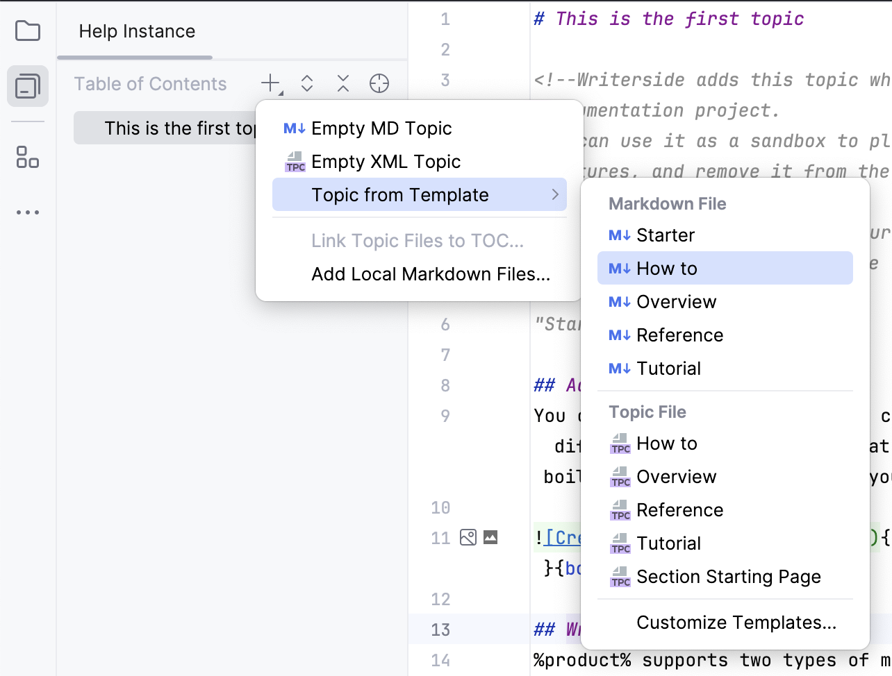
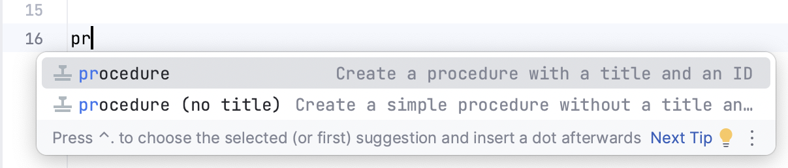
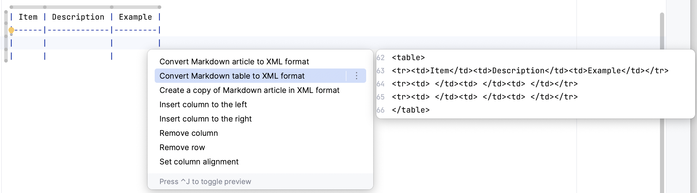

MyDocumentについて
新しいトピックを追加する
空のトピックを作成したり、開始に役立つ定型構造を含むさまざまな種類のコンテンツのテンプレートを選択したりできます。

コンテンツを書く
Writersideは、MarkdownとXMLの2種類のマークアップをサポートしています。 新しいヘルプ記事を作成するときは、2つのトピック タイプから選択できますが、これは単一の形式に固執する必要があるという意味ではありません。 Markdownでコンテンツを作成してセマンティック属性で拡張したり、XML要素全体を挿入したりできます。
XMLを挿入する
たとえば、プロシージャを挿入する方法は次のとおりです。
手順を導入する
入力を開始し、完了の提案からプロシージャの種類を選択します。

Tab またはEnterを押してマークアップを挿入します。
インタラクティブな要素を追加する
タブ
切り替え可能なコンテンツを追加するには、タブを利用できます（新しい行に入力を開始してタブを挿入します）。
折りたたみ可能なブロック
XML 要素全体を挿入するだけでなく、属性を使用して特定の要素の動作を構成することもできます。 たとえば、必須ではない情報を含む章を折りたたむことができます。
補足情報
折りたたみ可能なヘッダーの下のコンテンツはデフォルトで折りたたまれますが、次の属性を追加することで動作を変更できます。 default-state="expanded"
選択範囲をXMLに変換する
より多くの関数を使用して要素を拡張する必要がある場合は、選択したコンテンツをMarkdownからセマンティックマークアップに変換できます。 たとえば、テーブル内のセルをマージしたい場合は、Markdownでこれを行うよりもXMLに変換する方がはるかに簡単です。 キャレットをテーブルの任意の場所に置き、次のボタンを押しますAlt+Enter。

フィードバックとサポート
問題、ユーザビリティの改善、または機能のリクエストがある場合は、 YouTrack projectに報告してください(登録する必要があります)。
公開Slackワークスペースへの参加を歓迎します。 その前に、当社の行動規範をお読みください。 参加前に読んで確認済みであることを前提としています。
いつでもwriterside@jetbrains.comまでメールでお問い合わせください